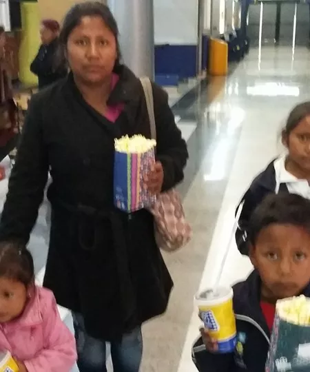

Sociedad Center Juvenil es una asociación civil sin fines de lucro y apartidista, fundada en el 2011 en el estado de Puebla, es conformada por profesionistas de Puebla y México, interesados y preocupados por los asuntos de carácter social en el país y el mundo.
Adquiriendo un compromiso con el trabajo humanitario para beneficiar al mayor número de personas posibles.
Misión
Combatir la pobreza y el rezago social a través de proyectos y actividades de alto impacto, favoreciendo a la población que se encuentra en pobreza extrema o vulnerable del estado y el país.
Visión
Ser una organización líder a nivel nacional e internacional en el desarrollo e implementación de proyectos y programas de asistencia social que aporten mejores condiciones de vida a la sociedad.
Valores
- Amor
- Solidaridad
- Honestidad
- Rectitud
- Servicio
- Perseverancia
- Transparencia
Objetivos
Regirnos siempre con: Transparencia y honestidad.
Promover actividades: Educativas, deportivas y culturales.
Promover ayuda: Hospitales, orfanatos, instituciones.
Nuestras filiales
- Brasil
- Cuba
- Puebla
- Oaxaca
- Veracruz
- Tlaxcala
Último proyecto
Gracias a tu apoyo se cumplió con el objetivo de que niños visitaran el cine, a través de un compromiso y trabajo en equipo, disfrutaron de la función en compañía de sus familias y seres queridos.